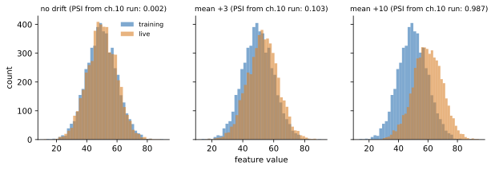

A normal web service fails loudly: errors, timeouts, red dashboards. A model fails quietly. It keeps answering in 20 ms with a clean HTTP 200 while its answers slowly become wrong, because customers changed, a data source changed or the world changed. Nobody gets paged. Weeks later a business report shows lost money. This chapter teaches you to watch for quiet failure. You will learn what to measure at four levels, compute the main drift scores (PSI, KS, Wasserstein, chi-square) by hand and with code on real numbers, see why drift in the inputs and drift in the meaning of the labels are different problems, estimate accuracy when labels arrive late, and design alerts that people do not learn to ignore. You know the first level from performance work: dashboards for latency, errors and saturation. We extend it to data and model quality.
Words you need in this chapter:
| Word | Plain meaning |
|---|---|
| Observability | Being able to understand what a system is doing from the data it emits (metrics, logs, traces). |
| Metric | A number measured over time, for example requests per second. |
| Reference data | The "normal" data to compare against, usually the training data. |
| Current (live) data | Recent production inputs. |
| Drift | A change in data or in the relation between inputs and outcome, compared with training time. |
| Label | The true answer (did the customer really leave?). Often arrives late. |
| SLO | Service level objective: a target such as "99.9% of requests succeed". |
Running example: the churn model from earlier chapters, served by churn-api (Chapter 7). One input feature, "average order value", has a training mean of 50 and spread (standard deviation) of 10.
| Level | Examples | How fast you learn | Needs labels? |
|---|---|---|---|
| 1. System health | Latency p50/p95/p99, error rate, throughput, CPU, GPU, memory, restarts | Seconds | No |
| 2. Data quality and drift | Null rate, schema, ranges, feature distribution, prediction distribution | Minutes to days | No |
| 3. Model performance | Accuracy, AUC, precision, recall, calibration, per-group metrics | Days to months (labels are late) | Yes |
| 4. Business and cost | Conversion, revenue, complaints, cost per 1,000 predictions, fairness gaps | Days to months | Sometimes |
Levels 1 and 2 give early warning. Levels 3 and 4 give the truth, but late. A good setup uses the early signals to guess trouble and the late signals to confirm it.
Prometheus is a time-series database that scrapes (reads) a /metrics text page from each service every few seconds, usually 15, and stores the numbers. Grafana draws dashboards from it. You met a /metrics endpoint in Chapter 7:
predict_requests_total 5
predict_errors_total 3
predict_latency_seconds_sum 0.038589Prometheus has four metric types:
| Type | Meaning | Example |
|---|---|---|
| Counter | Only goes up (resets on restart) | predict_requests_total |
| Gauge | Goes up and down | queue_length, gpu_memory_used |
| Histogram | Counts how many observations fell in each bucket | Latency buckets |
| Summary | Pre-computed quantiles in the client | Less common |
Counters are read as a rate: the increase between scrapes divided by the time. In PromQL (Prometheus's query language) the error ratio over 5 minutes is:
rate(predict_errors_total[5m]) / rate(predict_requests_total[5m])The [5m] window means "look at the last 5 minutes". Writing metrics from your own code uses the prometheus_client library (not run here):
# not run here
from prometheus_client import Counter, Histogram, start_http_server
REQS = Counter("predict_requests_total", "Predict requests", ["model_version"])
LAT = Histogram("predict_latency_seconds", "Latency", buckets=[.01, .025, .05, .1, .25])
start_http_server(9100)
with LAT.time():
... # model call
REQS.labels(model_version="v1").inc()A histogram stores cumulative counts per bucket ("requests at or under 10 ms", "at or under 25 ms", and so on). Prometheus computes a percentile with histogram_quantile(0.95, ...) by linear interpolation inside the bucket that contains the rank. You can do it yourself. Suppose 200 requests with these cumulative counts:
| Bucket upper edge (ms) | 10 | 25 | 50 | 100 | 250 | ∞ |
|---|---|---|---|---|---|---|
| Cumulative count | 40 | 120 | 180 | 196 | 199 | 200 |
Real output of my small function:
p50 21.25 p95 81.25 p99 200.0Problem 10.1.1 Verify p95 by hand.
| Formula | rank = q × total. Find the first bucket whose cumulative count is at least the rank. Then value = lower edge + (upper − lower) × (rank − count before) ÷ (count in bucket). |
|---|---|
| Plug in | rank = 0.95 × 200 = 190. The first bucket with cumulative at least 190 is (50, 100] with cumulative 196. The count before is 180, and the bucket holds 196 − 180 = 16 requests. |
| Compute | 50 + (100 − 50) × (190 − 180) ÷ 16 = 50 + 50 × 0.625 = 81.25 |
| Answer | p95 is about 81 ms. |
| Check | 190 lies between 180 (cumulative at 50 ms) and 196 (cumulative at 100 ms), so the answer must lie between 50 and 100 ms. It does. |
| Why it matters | The result is only as exact as your buckets. If your SLO is 100 ms, make sure a bucket edge sits at 100 ms, otherwise the interpolation hides what happens near the limit. Also never average percentiles across pods; add the bucket counts and compute from the sum. |
A useful ML dashboard has one row per level, so the on-call person reads top to bottom:
Keep a dashboard small enough to read in one glance. Fifty panels hide the one that matters.
An SLI (indicator) is a measured number, an SLO (objective) is the target for it. If the SLO is "99.9% of requests succeed over 30 days" then the error budget is the allowed failure: 0.1%. The burn rate is how fast you use it.
Problem 10.1.2 The SLO is 99.9% success. A bug makes 2% of requests fail. How fast is the budget burning, and how long until the 30-day budget is gone?
| Formula | burn rate = observed error rate ÷ allowed error rate. Time to exhaustion = period ÷ burn rate. |
|---|---|
| Plug in | 0.02 ÷ 0.001; and 30 days × 24 hours = 720 hours, divided by the burn rate. |
| Compute | burn rate = 20. Time = 720 ÷ 20 = 36 hours. |
| Answer | The budget burns 20 times faster than allowed and is gone in 36 hours. This deserves a page now, not a ticket tomorrow. |
| Check | At exactly 0.1% errors the burn rate is 1 and the budget lasts exactly 30 days. |
| Why it matters | Alerting on burn rate (fast burn pages, slow burn makes a ticket) ties alerts to user impact, not to arbitrary thresholds. |
Dashboard skills transfer fully. Many ML teams have excellent notebooks and no dashboards; someone useful on the team adds /metrics, histogram buckets at the SLO edge and a four-level dashboard. The Docker/Kubernetes probes from Chapter 7 and Chapter 11 feed the same system. OpenTelemetry is the vendor-neutral standard for emitting metrics, logs and traces (the path of one request across services); awareness is enough for now.
Check yourself

How to read the picture: each panel is a histogram of the feature "average order value". Grey is the training data, orange is live data. Left: no drift, the shapes sit on top of each other (PSI 0.002). Middle: the live mean moved by +3 (PSI 0.103). Right: the live mean moved by +10, the shapes barely overlap (PSI 0.987).
I generated a reference sample of 5,000 values from a normal curve (mean 50, standard deviation 10) and four live samples of 5,000 values each: no change, mean +3, mean +10, and spread doubled (standard deviation 20, same mean). Then I computed five scores. First, what each one means.
| Score | Idea in plain words | Reads as | Common rule |
|---|---|---|---|
| PSI (Population Stability Index) | Cut the reference into 10 equal-count bins. Compare the share of live data in each bin with the expected 10%. Sum (live − ref) × ln(live ÷ ref) over bins. | Size of shift. 0 means identical. | below 0.1 stable; 0.1 to 0.25 moderate; above 0.25 large (0.2 is also used as a cut-off) |
| KS (Kolmogorov-Smirnov) | The largest vertical gap between the two cumulative distribution curves. | A number from 0 to 1, plus a p-value. | A small p-value says "the distributions differ" |
| Wasserstein ("earth mover's") | The average distance you must move the reference values to turn them into the live values. | In the same units as the feature | Compare with the feature's spread |
| JS divergence | A symmetric, bounded cousin of KL divergence (a measure of how one distribution differs from another). | 0 to 1 (in base 2) | Useful when you need a bounded score |
| Chi-square | For categories: compare observed counts with expected counts. | A statistic with a p-value | For categorical features |
Predict first: which of the four cases has the biggest PSI? Is spread-doubled (no mean change) harmless?
def psi(ref, cur, bins=10):
edges = np.quantile(ref, np.linspace(0, 1, bins + 1)); edges[0], edges[-1] = -np.inf, np.inf
r = np.histogram(ref, edges)[0] / len(ref); c = np.histogram(cur, edges)[0] / len(cur)
r, c = np.clip(r, 1e-4, None), np.clip(c, 1e-4, None) # avoid log(0)
return float(np.sum((c - r) * np.log(c / r)))Real output:
case PSI KS stat KS p Wasserstein JS div
no drift 0.002 0.021 2.20e-01 0.23 0.0004
mean +3 0.103 0.139 2.17e-42 3.20 0.0184
mean +10 0.987 0.395 0.00e+00 10.17 0.1626
spread x2 0.501 0.169 1.93e-62 7.92 0.0877Reading the table:
The ordering mean +10 > spread x2 > mean +3 > no drift is the same in every column.
Problem 10.2.1 Compute PSI by hand for three bins. The reference shares are 0.5, 0.3, 0.2. The live shares are 0.4, 0.3, 0.3.
| Formula | PSI = Σ (live − ref) × ln(live ÷ ref) |
|---|---|
| Plug in | Bin 1: (0.4 − 0.5) × ln(0.4 ÷ 0.5). Bin 2: (0.3 − 0.3) × ln(1). Bin 3: (0.3 − 0.2) × ln(0.3 ÷ 0.2). |
| Compute | Bin 1: (−0.1) × ln(0.8) = (−0.1)(−0.22314) = 0.02231. Bin 2: 0 × 0 = 0. Bin 3: 0.1 × ln(1.5) = 0.1 × 0.40547 = 0.04055. Sum = 0.02231 + 0 + 0.04055 = 0.06286. |
| Answer | PSI = 0.0629, below 0.1: stable. Code printed hand PSI terms [0.02231 0. 0.04055] sum 0.06286. |
| Check | Each term is non-negative: the factors (live − ref) and ln(live ÷ ref) always have the same sign. So PSI is never negative. |
| Why it matters | You can see which bin contributed most (here bin 3, the high values growing), which tells you where the shift happens. |
Problem 10.2.2 Compute KS and Wasserstein by hand for two tiny samples: A = {1, 2, 3, 4, 5} and B = {2, 3, 4, 5, 8}.
| Step 1 | KS: build both cumulative curves at each value. At x = 1: A has 0.2, B has 0.0, gap 0.2. At 2: 0.4 vs 0.2, gap 0.2. At 3: 0.6 vs 0.4, gap 0.2. At 4: 0.8 vs 0.6, gap 0.2. At 5: 1.0 vs 0.8, gap 0.2. At 8: 1.0 vs 1.0, gap 0. |
|---|---|
| Step 2 | KS = the largest gap = 0.2. |
| Step 3 | Wasserstein for equal-size samples: sort both, average the absolute differences of matching positions. Pairs (1,2), (2,3), (3,4), (4,5), (5,8) give 1, 1, 1, 1, 3. Sum = 7, divided by 5 = 1.4. |
| Answer | KS = 0.2 and Wasserstein = 1.4. SciPy returned 0.2 and 1.4 too. |
| Check | B is A shifted up by 1 for four values and by 3 for the last one, so the average move of 1.4 is believable. |
| Why it matters | Wasserstein is in feature units ("order value moved by about 3.2 on average"), which a business person understands better than "PSI 0.103". |
For a category such as plan type, you cannot use KS. Suppose the reference shares are 50% basic, 30% plus, 20% pro, and in 1,000 live customers we see 420, 380 and 200. Expected counts are 500, 300, 200. The real output was chi2: statistic=34.133, pvalue=3.87e-08.
Problem 10.2.3 Verify the 34.13.
| Formula | chi-square = Σ (observed − expected)² ÷ expected |
|---|---|
| Plug in | (420 − 500)² ÷ 500 + (380 − 300)² ÷ 300 + (200 − 200)² ÷ 200 |
| Compute | 6,400 ÷ 500 = 12.8; 6,400 ÷ 300 = 21.333; 0 ÷ 200 = 0. Sum = 34.133 |
| Answer | The statistic is 34.13 with 2 degrees of freedom (categories minus 1), so p is about 4e-8: the plan mix has shifted (basic fell from 50% to 42%, plus rose from 30% to 38%). |
| Check | The two non-zero terms use the same gap (80) with different expected counts; the smaller expected count (300) gives the larger term. Correct. |
| Why it matters | A new category value or a shifted mix is common after a product change; check the category list too. |
Page-Hinkley alarm at sample: 1639 (true change at 1500). It detected the change 139 samples later, a typical delay-for-fewer-false-alarms trade.What drift is NOT. Drift in inputs does not prove the model is worse (the model may be robust to it), and a model can get worse with no input drift (10.3). Drift scores are smoke detectors, not accuracy meters.
Libraries such as Evidently, whylogs, NannyML and the cloud monitors compute these for you, and publish reports or push metrics to Prometheus. Knowing what PSI and KS mean lets you set sensible thresholds and explain a report to a product owner. (Not run here: those libraries are not installed; the scores above were computed with NumPy and SciPy.)
Check yourself
Formally: data drift is a change in P(x) (how inputs are distributed). Concept drift is a change in P(y given x) (the relation from inputs to the answer). Prediction drift is a change in the distribution of the model's outputs.
I built a world where the label depends on a feature x as y = 1 if x + noise > 0. I trained a logistic regression. Then I created a new world with the same distribution of x but the rule flipped: y = 1 if −x + noise > 0. Real output:
input PSI old vs new: 0.0075
accuracy old world: 0.849 new world: 0.157
mean prediction old: 0.48 new: 0.503The input PSI is 0.0075, so the data-drift monitor is silent. The mean predicted value hardly moves (0.48 to 0.503), so a prediction-drift monitor is silent too. Yet accuracy collapsed from 84.9% to 15.7%, worse than random guessing, because the model confidently predicts the opposite of the truth. Only labels reveal this.
Problem 10.3.1 Explain why the accuracy is 0.157 and not 0.5.
| Step 1 | In the new world the correct answer is the opposite of the old rule. The model still follows the old rule, so it is wrong whenever the old rule would have been right. |
|---|---|
| Step 2 | In the old world the model was right 84.9% of the time, so in the flipped world it is wrong about 84.9% of the time and right the remaining 15.1%. |
| Step 3 | Observed 0.157 is close to 1 − 0.849 = 0.151, the small gap coming from sampling. |
| Answer | The model is not guessing: it is systematically reversed, so it scores about 1 minus its old accuracy. |
| Check | 1 − 0.849 = 0.151, close to 0.157. |
| Why it matters | A model can be badly wrong while every unlabeled monitor is green. This is why you must plan how labels get back. |
Real concept drift is rarely a flip. Typical causes: a competitor's price cut changes churn behaviour, fraudsters change tactics, a policy change (new loan rules) or a pandemic. It can be sudden, gradual, recurring (seasonal) or an incident (temporary spike).
The true answer often arrives long after the prediction: churn after 90 days, loan default after 12 months, fraud after a chargeback weeks later. Options while you wait:
Let me test option 3 honestly with the flipped world above. Use average confidence, max(p, 1 − p), as an accuracy estimate. Real output:
estimated acc from confidence (old): 0.854 real: 0.849
estimated acc from confidence (new): 0.851 real: 0.157In the old world the estimate (0.854) matches the truth (0.849). In the flipped world the estimate says 0.851 while the truth is 0.157. Confidence-based estimation is blind to concept drift, because the model is just as confident as before. This is exactly the assumption failing, and why it should be treated as an early hint for covariate shift only.
Option 2, a random labelled subset, does work. In another simulation with true accuracy 0.851, I labelled a random 20% of 10,000 predictions (1,958 rows) and computed accuracy on them: 0.844. That is within a point of the truth.
Problem 10.3.2 How precise is an accuracy measured on 1,958 labelled rows?
| Formula | standard error = √(p × (1 − p) ÷ n) |
|---|---|
| Plug in | √(0.844 × 0.156 ÷ 1,958) |
| Compute | 0.844 × 0.156 = 0.13166; ÷ 1,958 = 0.00006724; √ = 0.0082. A 95% interval is about ±1.96 × 0.0082 = ±0.016. |
| Answer | The accuracy is 0.844 ± 0.016 (from 0.828 to 0.860). The true value 0.851 is inside. |
| Check | The same formula as the canary noise in Chapter 8. Quadrupling the labelled rows halves the width. |
| Why it matters | A drop from 0.85 to 0.80 is clearly visible with 2,000 labels, but a drop to 0.84 is not. Decide the sample size from the smallest drop you care about. |
Detection leads to action (Chapter 9, 9.4): retrain, roll back to a previous model, add a feature, or fix the data. Also log the model's inputs, outputs, model version and request ID so labels can be joined later and used for training data. Beware feedback loops (Chapter 1): if the model's decisions change which outcomes you observe (you only learn about loans you approved), the logged data is biased.
Ask on day one: "When do we get labels, and who owns the join between predictions and outcomes?" Many teams have no answer, and that is the biggest monitoring gap you can fix.
Check yourself
An alert that fires after PSI is above 0.2 on three consecutive days. Real output for eight days of PSI values:
run = 0
for d, p in enumerate(psis, 1):
run = run + 1 if p > .2 else 0
print(f"day {d} psi {p:.2f} streak {run}" + (" ALERT" if run >= 3 else ""))day 1 psi 0.04 streak 0
day 2 psi 0.05 streak 0
day 3 psi 0.22 streak 1
day 4 psi 0.06 streak 0
day 5 psi 0.25 streak 1
day 6 psi 0.27 streak 2
day 7 psi 0.31 streak 3 ALERT
day 8 psi 0.30 streak 4 ALERTProblem 10.4.1 Why did day 3 not alert, and what is the cost of this rule?
| Step 1 | Day 3 has PSI 0.22, above 0.2, so the streak starts at 1. Day 4 drops to 0.06 and resets the streak to 0. |
|---|---|
| Step 2 | Days 5, 6, 7 are above 0.2 for three days in a row, so the alert fires on day 7. |
| Answer | A single spike is ignored; sustained drift alerts on the third day. The cost is delay: a real shift starting on day 5 is reported on day 7, two days later. |
| Check | If the rule were "alert on any day above 0.2", it would have fired on day 3 and day 5, and one of those was a false alarm. |
| Why it matters | The streak length trades false alarms against delay. Choose it from how fast the drift can hurt you. |
| Style | How it works | Good for | Weak at |
|---|---|---|---|
| Fixed threshold | PSI above 0.2, p95 above 100 ms | Known limits, SLOs | Seasonal metrics, new services with no baseline |
| Anomaly based | Compare with a forecast or recent normal (rolling mean and spread) | Metrics with daily or weekly cycles | Slow drift (the baseline moves too), needs tuning |
| Burn rate (10.1) | Error budget use per hour | User-facing availability | Not for quality metrics |
groups:
- name: churn-api
rules:
- alert: HighErrorRatio
expr: rate(predict_errors_total[5m]) / rate(predict_requests_total[5m]) > 0.02
for: 10m
labels: {severity: page}
annotations: {summary: "Error ratio above 2% for 10 minutes", runbook: "wiki/runbooks/churn-errors"}
- alert: FeatureDrift
expr: feature_psi{feature="avg_order_value"} > 0.2
for: 3d
labels: {severity: ticket}for: 10m and for: 3d are the persistence rule. severity routes the alert to a pager or to a ticket queue. feature_psi would be a gauge your drift job exports.
A silent ML incident often has a long time to detect. Track it as a metric: time from the start of the problem to the first alert. Shortening it is the main goal of monitoring.
For LLM systems also monitor tokens in and out, cost per request, time to first token, refusal and guardrail trigger rate, user feedback, retrieval hit quality and prompt version. Tools: Langfuse, LangSmith and Phoenix collect traces of chains and agents. Chapter 13 develops this.
Problem 10.4.2 A monitor has 40 alerts per week and the team acts on 4. What is the actionable rate and what do you do?
| Formula | actionable rate = alerts acted on ÷ alerts fired |
|---|---|
| Plug in | 4 ÷ 40 |
| Compute | 0.10 = 10% |
| Answer | 90% of the alerts are noise. Group them by name, delete or downgrade the ones never acted on, lengthen persistence, and aim above 50%. |
| Check | 36 alerts per week with no action means 36 chances for the team to learn to ignore the pager. |
| Why it matters | Alert quality is a reliability feature. A quiet pager that is trusted beats a loud one that is ignored. |
Platform and SRE teams own paging; ML owns the model-specific signals and runbooks. Writing the runbook ("PSI alert: check upstream schema changes first, then compare with last month, then ask data engineering") is a small task that makes you valuable fast.
Check yourself
for: 10m in a Prometheus rule do? Answer: The condition must hold for 10 minutes before the alert fires./metrics; counters become rates; histograms give percentiles by interpolation (p95 81.25 ms in our example); never average percentiles.| Item | Formula or tool | Note |
|---|---|---|
| PSI | Σ (live − ref) × ln(live ÷ ref) over bins | 0.1 and 0.25 are common limits |
| KS | Largest gap between two cumulative curves | Add the p-value only as evidence |
| Wasserstein | Mean absolute difference of sorted values | In feature units |
| Chi-square | Σ (obs − exp)² ÷ exp | Categories, df = categories − 1 |
| Error rate in PromQL | rate(errors[5m]) / rate(requests[5m]) | Counters need rate |
| Burn rate | error rate ÷ (1 − SLO) | Page on fast burn |
| Label sample noise | √(p(1−p)/n) | 95% is about ±2 times this |
1. (Easy) A counter reads 1,200 at 10:00:00 and 1,500 at 10:01:00. What is the rate per second?
Answer: (1,500 − 1,200) ÷ 60 = 5 requests per second.
2. (Easy) Which metric type would you use for "current queue length"?
Answer: A gauge (it goes up and down).
3. (Easy) PSI is 0.04 for a feature. Stable, moderate or large?
Answer: Stable (below 0.1).
4. (Medium) Compute PSI for reference shares 0.6, 0.4 and live shares 0.5, 0.5.
Answer: Bin 1: (0.5 − 0.6) × ln(0.5 ÷ 0.6) = (−0.1)(−0.18232) = 0.018232. Bin 2: (0.5 − 0.4) × ln(0.5 ÷ 0.4) = 0.1 × 0.22314 = 0.022314. Sum = 0.0405. Stable.
5. (Medium) A = {10, 20, 30}, B = {13, 20, 41}. Compute Wasserstein.
Answer: Sorted pairs (10,13), (20,20), (30,41) give differences 3, 0, 11. Sum 14 ÷ 3 = 4.67.
6. (Medium) Find the bug: an alert fires "if PSI > 0.2" using yesterday's data as the reference. A slow drift of 0.01 per day is never detected. Why?
Answer: Each day differs only slightly from the day before, so daily PSI stays tiny while the total drift grows. Compare with a fixed reference as well (the training data).
7. (Medium) Chi-square for observed 60, 40 against expected 50, 50.
Answer: (60 − 50)² ÷ 50 + (40 − 50)² ÷ 50 = 2 + 2 = 4. With 1 degree of freedom the p-value is about 0.046, a borderline difference.
8. (Hard) Your model has PSI below 0.05 on every feature, yet the monthly business report shows fewer conversions from model-driven offers. Name three possible causes and one first check.
Answer: Concept drift (customers react differently), a label or outcome change (conversion tracking changed), a feedback loop or an upstream change not seen in the monitored features. First check: accuracy or calibration on recently labelled data by prediction date, and the proxy metric trend.
9. (Hard) A fraud model's labels arrive after 45 days. Design monitoring for the first 45 days.
Answer: Level 1 system metrics with burn-rate alerts; level 2: PSI per top feature, prediction score distribution and block rate, with persistence rules; proxy signals (customer disputes within 7 days, manual review outcomes); a randomly sampled manual review set of cases for early labels; shadow comparison against the previous model; when labels land, performance by prediction date.
10. (Interview) "How do you detect model degradation when you have no labels yet?"
Answer: Watch input drift (PSI, KS, Wasserstein, null and range checks), prediction drift (score distribution, positive rate), proxy metrics, and a small randomly labelled sample; use performance-estimation methods only with calibrated models and as hints. Say plainly that concept drift cannot be proven without labels, then show the flipped-rule example.
11. (Interview) "Your drift alert fires every Monday. What do you do?"
Answer: Check for seasonality or a weekly business event. Compare with a same-weekday reference or a seasonal baseline, add persistence, and if the drift is harmless and explained, lower its severity or remove the alert. Document it in the runbook.
You are my patient, practical professor. I am a working professional moving into MLOps, and English is my second language. Teach me Chapter 10 topic "monitoring an ML model in production: four levels, Prometheus counters, histograms and Grafana dashboards". Explain step by step with simple English, include a PromQL error-ratio example and how a percentile is computed from histogram buckets using real numbers. Ask me one check question after each part and wait for my answer.
You are my patient, practical professor. I am a working professional learning ML operations. The topic is "data drift metrics: PSI, KS test, Wasserstein distance, chi-square". Give me 8 graded exercises with small numbers I can calculate by hand (PSI on three bins, KS on two tiny samples, Wasserstein on sorted values, chi-square for categories), plus one that asks which metric to use for which feature type. Do not give solutions. When I send my answers, mark them and explain my mistakes simply.
You are my patient, practical professor. I am a working professional moving into ML roles. The topic is "concept drift versus data drift, and delayed labels". Quiz me one question at a time, starting with easy definitions, then scenarios such as fraud labels arriving after 45 days or a model with no input drift but falling conversions. Explain what I can and cannot detect without labels. Keep a score and end with three revision points.
You are my patient, practical professor. I am a working professional moving into MLOps. Review my work on "monitoring and alerting design" for my model: here are my metrics, dashboard panels, drift checks and alert rules: [PASTE HERE]. Check whether I cover all four levels, whether my reference data is sensible, whether alerts are actionable, persistent, tiered and linked to runbooks, and how I would handle delayed labels. Give a prioritised list of fixes in simple English.
You are my patient, practical professor. I am a working professional preparing for MLOps interviews. Run a mock interview on "ML monitoring and drift": what to monitor, PSI and KS, concept drift, delayed labels, alert fatigue, SLO burn rate and incident response. Ask one question at a time from basic to design level. After each answer give feedback, a stronger model answer and a score out of 5. Include one scenario about a silent model failure found by a business report.